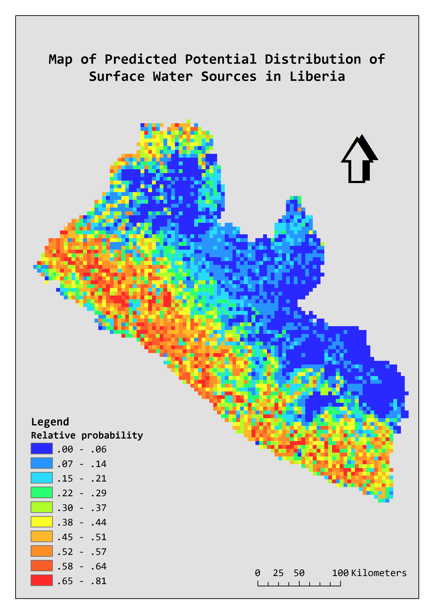

Model inputs:
In total, 59 water point data describing surface water sources derived from the Water Point Exchange are employed as the observed occurrence sample of surface water,
which excluded duplicates and those located within a same 5km x 5km grid cell (to avoid introduce any duplicate to the model).
For predictive covariates, this study identified 10 factors that may be importance determinants of the spatial distribution of open source drinking water considering both the availability of surface water resources and socio-economic factors that may reflect the local demands and preferences.
For example, Euclidean distance to inland water was calculate to reflect the availability of surface water resources;
improved water source coverage was employed to indicate the potential demands on surface water;
open defecation surface was used as a proxy of poverty indicator to reflect potential affordability of advanced water supply services.
All predictive covariate layers were scaled down to 5km spatial resolution.

Top to bottom, left to right: (1) surface water sample (derived from WPDx); (2) bias layer; (3) distance to inland water (derived from DCW); (4) elevation (derived from ASTER GDEM, product of NASA and METI);
(5) slope (derived from ASTER GDEM, product of NASA and METI); (6) annual rainfall (derived from WorldClim); (7) depth to groundwater (derived from Equilibrium Water Table Africa Model by Fan et al., 2013);
(8) distance to villages (derived from OpenStreetMap); (9) distance to roads (derived from OpenStreetMap); (10) improved water source coverage (derived from DHS modelled surfaces);
(11) coverage of open defecation (derived from DHS modelled surfaces); (12) land cover (derived from MODIS Land Cover Type (MCD12Q1) version 5.1).
Model building:
For model building, 70% of the surface water presence points were randomly selected to train the model,
whilst the remainder were set aside for testing the model performance.
We generated 1,000 background points by randomly selecting points within the full spatial extent defined in Liberia (where large water bodies were excluded).
We repeated the sampling of training and background points 50 times and then computed the aggregated prediction and performance analysis.
Evaluation of model performance was carried out using Area Under the Receiver Operator Curve (AUC).
An AUC value of 1 reflects perfect discriminatory power of the model;
0.5 indicates that the prediction failed to capture any patterns and is no better than a random distribution;
AUC above 0.75 indicates a potentially useful discrimination of the model.
The MaxEnt model building was carried out using R with the MaxEnt package.
The R code can be downloaded from here.


|